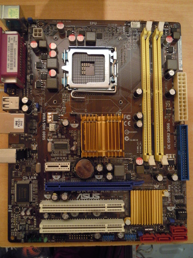

|  | La placa base, también conocida como tarjeta madre, placa madre o placa principal (motherboard o mainboard en inglés), es una tarjeta de circuito impreso a la que se conectan los componentes que constituyen la computadora. Es una parte fundamental para montar cualquier computadora personal de escritorio o portátil o algún dispositivo. Tiene instalados una serie de circuitos integrados, entre los que se encuentra el circuito integrado auxiliar (chipset), que sirve como centro de conexión entre el microprocesador (CPU), la memoria de acceso aleatorio (RAM), las ranuras de expansión y otros dispositivos. |